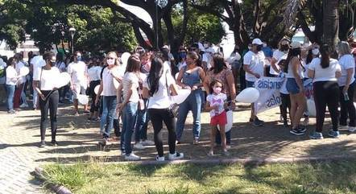

(22/05/2021 - 12H28)
Um protesto pelo retorno das aulas presenciais
em Contagem, na região metropolitana de Belo Horizonte, reuniu pais, alunos e equipes
de escolas particulares nas ruas da cidade, na manhã deste sábado (22).
Vestidos de branco e segurando balões e faixas, os manifestantes seguiram um um carro
de som que saiu da Praça Paulo Pinheiro Chagas e seguiu a avenida João César de Oliveira,
uma das principais do município. O protesto foi encerrado na Praça das Man... (ver mais)